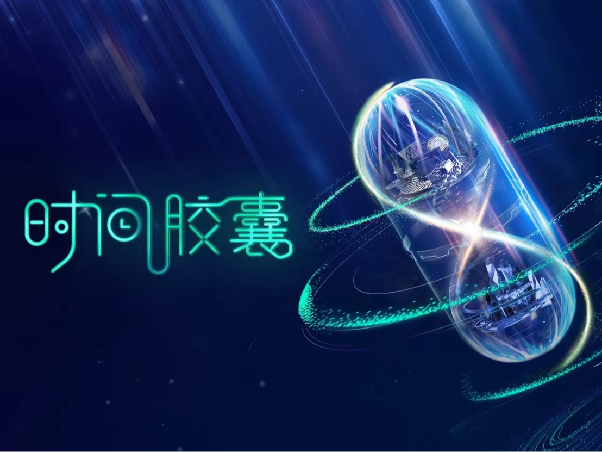
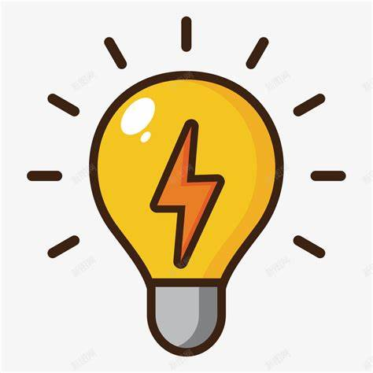
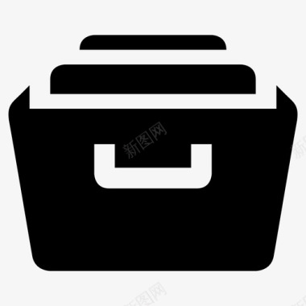
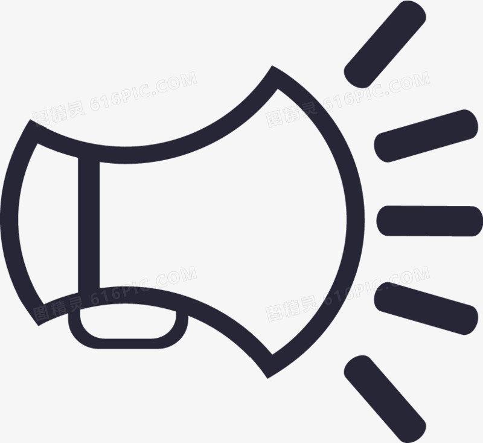

创建您的专属时间胶囊 ✨
想象一下，把此刻的记忆、情感和期待封存起来，等到未来的某一天再打开，那将是多么奇妙的体验呀！就如同打开了一扇通往过去的时光之门~
记录现在，留给未来 📜
时间胶囊是一种特殊的容器，用来保存物品或信息，直到未来某一天才被打开查看。它就像是一个时光的保险柜，将我们当下最珍贵的东西妥善保管。
如何开始？
- 写下你的故事、愿望或是给未来的信。可以尽情地倾诉内心的话语，把那些平时不敢说出口的梦想都写下来哦~
- 选择要放入的纪念品。比如第一次约会时的电影票根、旅行时带回来的特色小物件等等，每一件都承载着满满的回忆呢。
- 设置开启时间。可以是十年后的生日、孩子长大成人的那一天，让这份期待更加具体。
灵感来源 
- 一张全家福

- 那是家庭温暖的象征，每次看到都会心生暖意。
- 你最喜欢的书的一段摘录 《百年孤独》中的经典语句，仿佛能带你再次沉浸在那奇幻的文学世界里。
- 今年最难忘的经历描述，比如登顶那座梦寐以求的高山时的激动心情，永远都不会忘记。
更多创意建议
- 当前流行的音乐列表，放上几首当下最热门的歌曲，等到未来再听，说不定会勾起很多回忆呢。
- 个人手工艺品，自己亲手制作的陶艺小摆件或者手工编织的小挂件，都是独一无二的哦。
- 写给自己的信，和未来的自己来一场跨越时空的对话，问问那时的自己是否实现了现在的梦想。
存放小贴士 
确保您的时间胶囊存放在干燥且安全的地方。避免阳光直射和潮湿环境，不然里面的物品可能会受到损坏哦。可以选择放在衣柜的顶层、地下室的干燥角落等地方呢。
注意事项 
请不要放置易腐烂或对环境有害的物品。比如新鲜的水果、化学药品等，这些可都不适合放在时间胶囊里呀。
记得标记好您的时间胶囊，并安全存放！可以在胶囊外面贴上一个带有自己名字和开启时间的标签，这样就不会搞混啦。
更多详情，请联系：8686886@163.com，我们随时为您解答疑问哦~
参与者照片合集
来看看其他人的精彩瞬间吧！他们都用时间胶囊记录下了属于自己的独特故事呢。